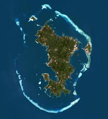
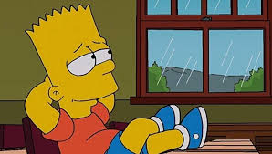

Nous sommes ravis de vous aceuillir chez nous.
Nous vous accompagnerons durant votre visite sur site du RSMA.
Ce récif corallien de 160 km de long entoure un lagon de 1 100 km2, un des plus grands et des plus profonds au monde[41]. On trouve, sur une partie de la barrière de corail, une double barrière qu'il est rare d'observer sur la planète. Il protège des courants marins et de la houle océanique la quasi-totalité de Mayotte, à l'exception d'une douzaine de passes, dont une à l'est appelée « passe en S ». Le lagon, d'une largeur moyenne de 5 à 10 km, a une profondeur pouvant atteindre jusqu'à une centaine de mètres. Il est parsemé d'une centaine d'îlots coralliens comme Mtsamboro.
Le récif procure un abri aux bateaux et à la faune océanique. L'ensemble des terres émergées de Mayotte couvre une superficie d'environ 380 km2, ce qui en fait de loin le plus petit département d'outre-mer français, derrière la Martinique, déjà trois fois plus grande avec 1 128 km2. Cette surface est cependant difficile à évaluer avec précision, étant donné le nombre de petits îlots inhabités, dont une partie sont totalement sous l'eau à marée haute, mais peuvent révéler des surf aces importantes à marée basse.
Les principales îles sont :

Il est implanté à Combani à environ 30 minutes en voiture de Mamoudzou, au cœur de la Grande Terre. Il est constitué alors, par une compagnie du 4e RSMA de La Réunion. En 1991, il portait le nom de Détachement du service militaire adapté de Mayotte (DSMAM). Le détachement devient ensuite autonome et prend le nom d'Unité du service militaire adapté de Mayotte. Formant corps depuis le 1er août 1996, elle devient Groupement du service militaire adapté (GSMA.M) en septembre 2000 puis bataillon du service militaire adapté (BSMA) de Mayotte le 1er juillet 2013. Le 31 mars 2018, il prend l'appellation de régiment du service militaire adapté de Mayotte.
Il comprend un état-major et deux compagnies de formation professionnelle. Le 14 juin 2001, le GSMA de Mayotte hérite du patrimoine du 4e RIMa et reçoit la garde du drapeau[2]. Le 3 juillet 2018 lors de la passation de commandement entre le lieutenant-colonel Dominique Bonte et le lieutenant-colonel Frédéric Jardin, il rend le drapeau du 4e RIMa dont il a la garde et reçoit des mains du général Thierry Deladoucette son nouveau drapeau portant dans ses plis, régiment du service militaire adapté de Mayotte. Le 14 juillet 2018, un détachement du RSMA-My défile derrière son nouveau drapeau et son chef de corps sur les Champs-Elysées.
Bonjour
bienvenue au RSMA de Mayotte
Nous sommes vendredi.
Aujourd'hui nous sommes lundi et nous allons commencé le cours en revoyent ce que nous avons appris la semaine dérniere

Fruit
Liste de course a faire
Qui est Bacar Said
sur mon lien pro